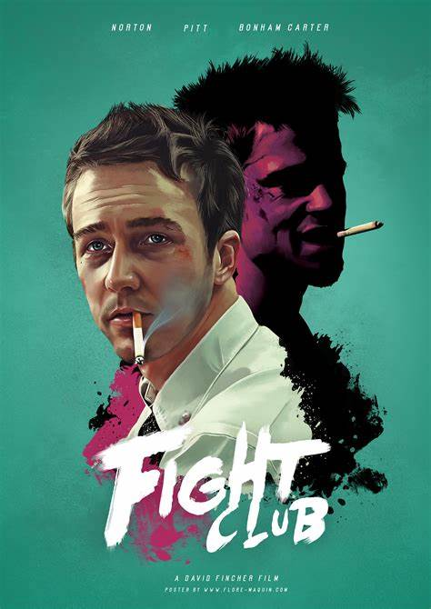

Mis Peliculas favoritas
Hola voy a presentar mi top 5 de peliculas favoritas.
5. Withplas
cast
Miles Teller--Andrew
J.K. Simmons--Fletcher
Paul Reiser--Jim Neimann
Melissa Benoist--Nicole
La historia de Andrew, un joven músicos de jazz, que acaba de entrar a uno de los conservatorios más importantes de Estados Unidos para tocar la batería, pero su sueño no sólo es tocar jazz, su sueño es ser el próximo gran baterista del mundo.
4.Fight club

cast
Edward Norton--Narrator
Brad Pitt--Tyler Durden
Meat Loaf--Robert Paulsen
Un hombre aburrido de su vida busca una cura para su insomnio. Después de un viaje en avión conoce a Tyler Durden; un vendedor de jabones con una ideología de vida muy particular.